As I get older, I realize just how much I want to keep a CURATED closet. I’ll admit this is very hard for me as I’m VERY much a consumer. I always have been. If I want something, I’ll buy it. Lately, I’ve been doing a bit better and really honing in on what I already have vs. just buying something new only to realize I have something SUPER similar in my closet. I took a look at my closet, and found some pieces that are true wardrobe all stars for me. These wardrobe must haves are a mix of things I’ve owned for years + some newer things that are already staples!
I’ve owned these jeans for about a year now and they are definitely my MOST WORN. When I first got them, I kind of hated how long they were, but loved the fit. I was just going to deal with that. Then I decided to be an adult and get them tailored. The result? An immediate induction into my wardrobe must haves. They are, in my opinion, the best wash & the best rigid denim. I think I reach for these more than any other pair I have.
Size Tip: I got my normal size in these. While they’re definitely snug (as is all rigid denim), they’ll eventually mold to your body after a couple of wears. I actually am probably a full size/size and a half bigger than the size I was when I got them and they still work because they’re just perfectly fitted for my body
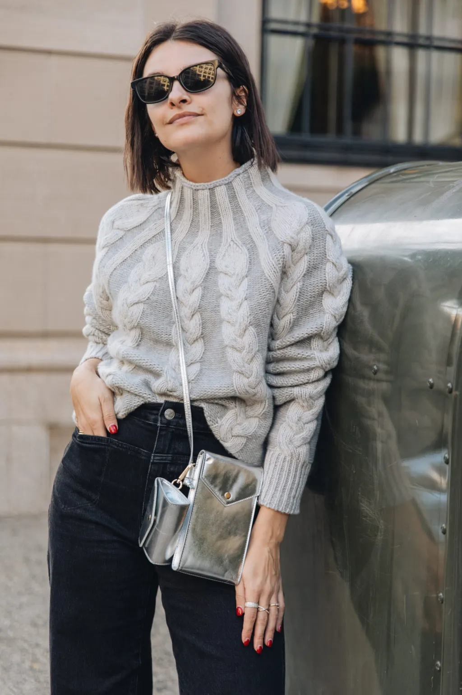I remember when I first felt J.Crew cashmere. One of my college best friends worked at J.Crew and always let me borrow her sweaters, and I just LOVED them so much. It was an instant love. And since then, I’ve always gravitated towards yummy cashmere. The thicker the better. But with that, comes a price. Personally, I think the best brands for affordable, basic cashmere sweaters are J.Crew and Everlane. I’ve never tried the cashmere from this brand, but I’ve heard great things.
I’m OF COURSE slightly biased (since I work for J.Crew), but J.Crew has the best cashmere of all time. I actually think our cashmere is also affordable compared to other brands. Whether it’s a classic silhouette (but this is my favorite sweater we’ve ever made) or a fun novelty piece, I can promise you you’re going to keep these sweaters forever. I’ve been collecting J.Crew cashmere for years now. I always look forward to a fresh palette of colors season after season – and basics are always available of course.
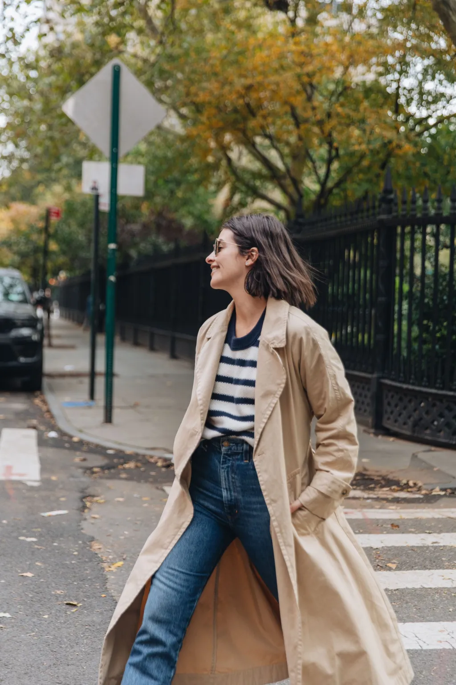I didn’t think I was going to love this coat as much as I do. But I saw this picture of an influencer wearing it, and I couldn’t stop thinking about it. I’ll preface it by saying it’s not your average trench coat. It’s definitely more of a “throw on and go fall coat”. I think I was most drawn to the length of it. It reminded me of a long coat my dad used to wear to work. It gives off such chic, cool girl vibes and I just LOVE wearing it. I just know I’m going to have this in my closet for years.
If you’re looking for something practical, then I’m always going to recommend this trench coat. I also own this for actual rainy days, and it’s definitely one of the best trench coats I’ve ever owned.
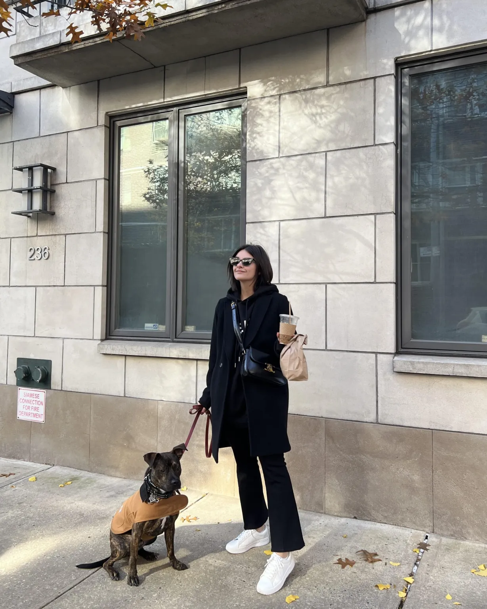Okay these are my newest obsession. The second I put these on I was like, “OH MY GOD THEY’RE SO GOOD”. They’re actually exactly what I’ve been wanting in my closet. They’re an in between of a cropped flare jean, but have the feeling of a legging. There aren’t any pockets, but I give them a pass because of how. freaking. comfortable. they. are. I guess it makes sense why they’re called the Jetset – they’re PERFECT for casual to a bit more dressed up to super dressed down for a flight. Fun fact: I changed my entire Thanksgiving outfit because I got these in the night before and I just NEEDED to wear them. I’m so happy they’re now part of my wardrobe must haves!
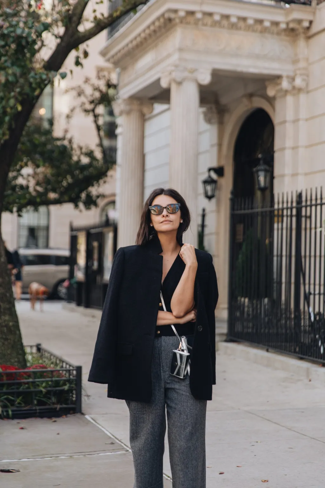I bought this blazer in ivory last year (seen here), and have LOVED it ever since. When I found out we were doing it in black for this year, I could NOT wait for it to be available. It’s a great blazer jacket option – I wear it out and about in pretty cold temperatures. I wear it so often! It’s made of this incredible Italian boiled wool (also in one of my other favorite coats, the Daphne), making you feel super luxe no matter what else you’re wearing under it.
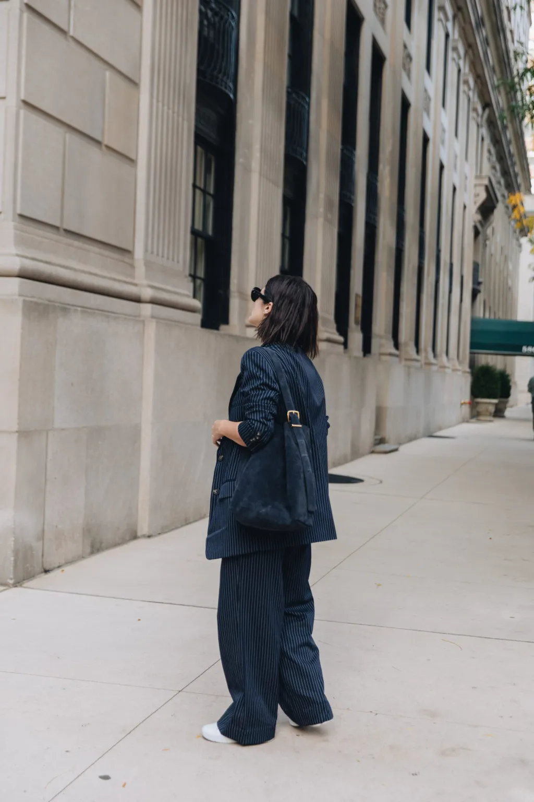I’ve definitely raved about this bucket bag. And I still love it. BUT when I saw THIS bag, it was truly love at first sight. I waited a bit to bite the bullet to make sure that I really did want a navy suede bag. I decided it was a good staple, and I was very much right. I immediately put all of my things in it as soon as it arrived. I’ve now deemed it my work bag – it even fits my big work laptop! Aside from the gorgeous navy color, I love the functional wide buckle strap. I wear it longer when I’m using it for work, and wear it shorter when I wear it casually. I could NOT recommend this bag more – and it’s at such a great price.
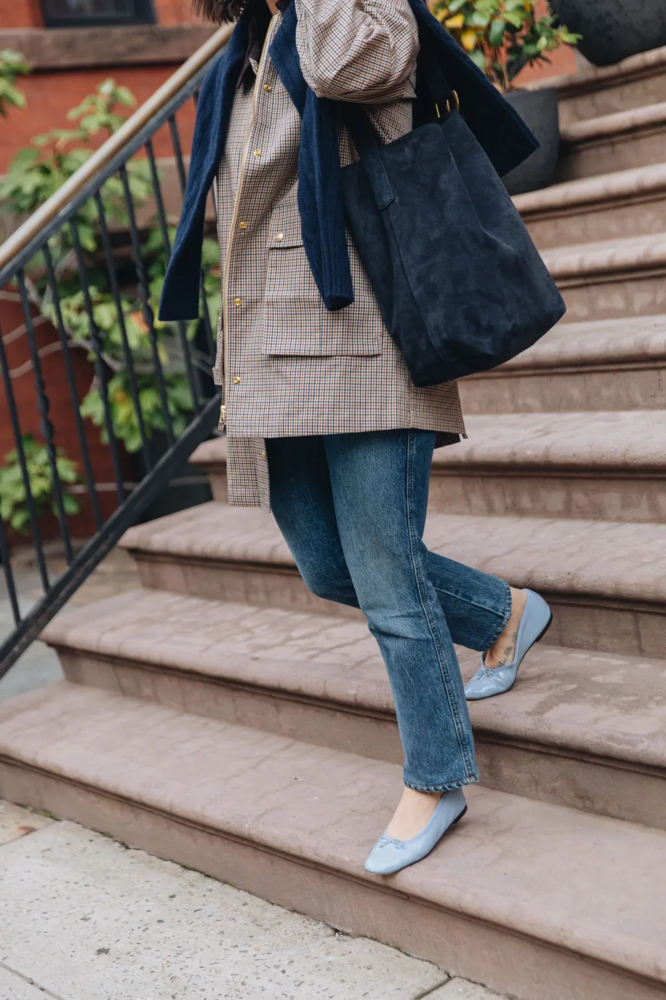I love that ballet flats made such a comeback. I’ve owned my Chanel ballet flats for years, but definitely had them tucked away in my closet for a couple of them. When I saw the resurgence on social media, I knew it was my time to shine. I added a couple of pairs between last year and this year, and it’s absolutely my most worn type of shoe. I wear ballet flats whenever I get the chance, even if that means my feet/ankles will be freezing. I think they really just pull together a look so effortlessly.
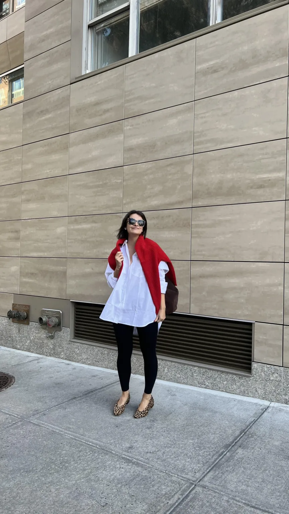And last, but certainly not least…the button down. I’ve been wearing this one non-stop. I know it’s a bit pricey, so I wanted to link another similar fitting option. I own this one in black and khaki. I think an oversized button down is a crucial staple in just about anyone’s wardrobe. There’s something super effortless about it and can be worn with all different kinds of bottoms!
I think Thanksgiving might be my favorite holiday. Actually, no. I’m taking a stance – Thanksgiving IS my favorite holiday. I think it’s because my love language is food (LOL). I’m also lucky enough that I’m able to spend most holidays with both my family and Rob’s family. Some years, I opt to dress comfortable, and others I like to get a little dressier. I think this outfit is a good mix of the two. I wanted to share a couple of Thanksgiving outfit ideas -ya know, so you can focus on what you’re (literally) bringing to the Thanksgiving table. I always say my presence is the present so….my family expects nothing from me;)
My look is probably on the dressier side, and I have good reason! I know a lot of people save their dressy looks until Christmas, Hanukkah, Kwanzaa, or New Year’s Eve, but I actually get a liiiiittle more dressed for Thanksgiving. I actually am unsure why, but I feel like that’s been my outfit formula for a couple of years now. I paired this amazing skirt (similar here) with a black sweater that I’ve had in my closet for a couple of seasons now (updated version for this year here). I paired it with a leopard coat (I also styled a different leopard coat in 2020), and just LOVE how these neutrals came together – it’s giving…Thanks. (See what I did there?) I’m also a sucker for a mini skirt and knee high boots, so I topped the look off with these Isabel Marant boots (similar here and here)
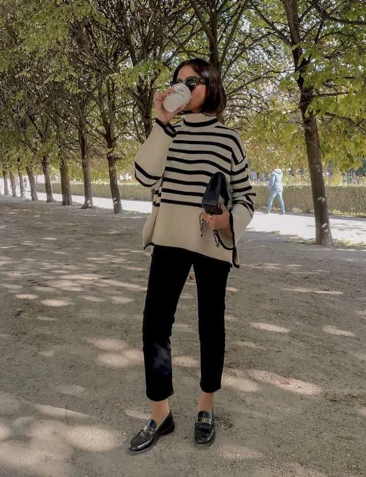I NEVER underestimate the power of a good black pant. And when you pair it with an oversized sweater (just in case you wanted to take that post-meal nap with your pants unbuttoned)? It becomes one of the perfect looks to wear to Thanksgiving dinner. I’d opt for a cropped pair with a loafer or a cool sneaker! But if you’re looking for a wide leg option, then I’d pair with a bootie!
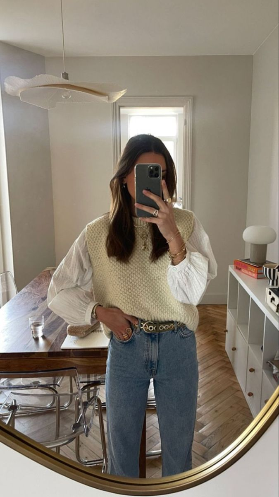And finally, if you’re just looking to throw on some jeans – this is the look for you. I’ve been so into vests lately (just got this one and so excited to wear it). I think they add a nice little texture to your look. PLUS, I like that it’s an additional layer – but not too warm when you’re surrounded by the heat of all the cooking going on in the kitchen. If you’re not sold on the vest trend, you can always pair a tank or t-shirt with a chunkier cardigan like this one!
When I initially started thinking about this partnership with Stitch Fix, I was interested, but I wasn’t immediately sold. Why? Because I’m usually pretty good at shopping. I know what I like, and what I want. But the more I thought about it, the more intrigued I was. At the end of the day, I actually liked the idea of essentially having someone find new pieces for me based on my personal preferences. And I figured it would be great to start with my favorite season for getting dressed — FALL!!! Stitch Fix has some really great key features that I like and wanted to share more with you today.
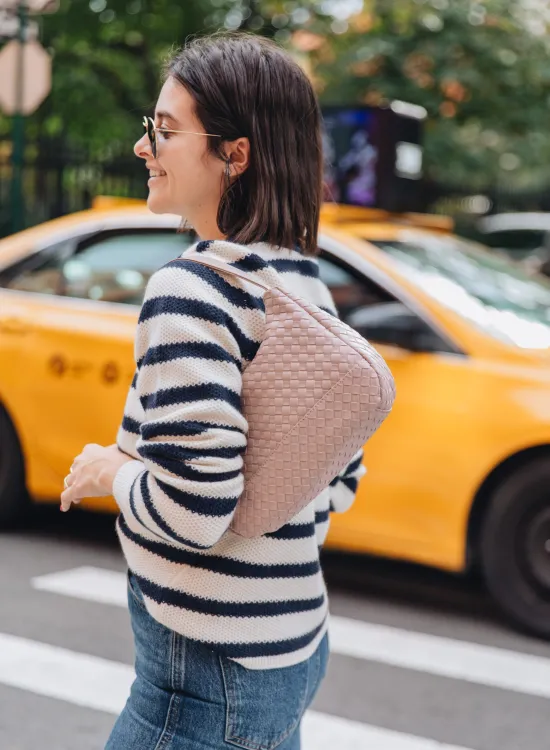But first…what is Stitch Fix? It’s an on demand personalized styling service delivered right to your doorstep. Stitch Fix makes it easy (and fun!) to discover styles and trends that you’ll love. The best part is that there’s NO subscription required – you can get a Fix (a box of 5 personally curated items selected by your own stylist) at any time.
You’ll take a quick quiz that allows you to share your style preferences with your stylist. The quiz encompasses everything from your sizes across different categories, height, proportions, how you like styles to fit, etc. It’s pretty detailed and that made me feel better about having a stylist choose pieces for me.
From there, you’re given a series of outfit collages to go through. You can either love it, hate it, or only like some of the pieces. There’s also a section on what kind of styles to avoid, and what kind of price range you’re looking to stay within. This was actually my favorite feature of the quiz. I love that they take into consideration YOUR needs so that 1. You can afford the pieces you’re sent and 2. The pieces are in line with the quality you expect.
I love that Stitch Fix has a team of stylists that you can trust to keep you on top of your style game. And again, it’s kind of fun to have someone do all of the shopping for you and get a fun little surprise at your door – when you want it!
I was really surprised at the number of brands Stitch Fix carries. These are brands I know and love (i.e. Club Monaco). I was also really excited to get some pieces from some new to me brands!
I couldn’t believe how easily my new pieces from Stitch Fix fit right into my wardrobe. While I never dress super trendy to begin with, I do like staying up to date on trends. And all of the pieces I received were almost TOO easy to style!
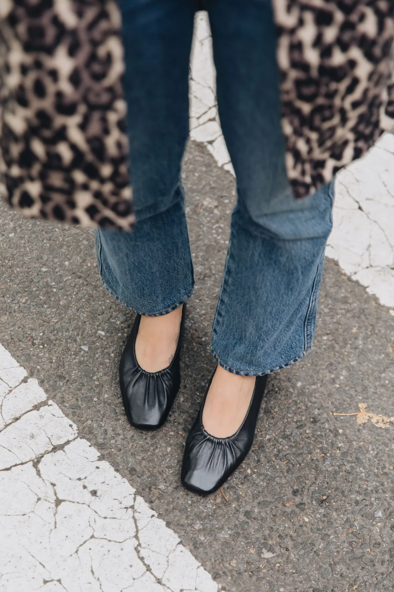It seems like flats are having a major moment. I’m a HUGE flats girl (yes, even in the winter to work – I just commute to the office in different shoes!!!), so when these amazing black flats from Seychelles arrived, I was STOKED. They are elegant, yet modern with the snipped square toe. The gathered detail adds such a nice finishing touch, and oh the best part? The cushioned footbed ensures ultimate comfort.
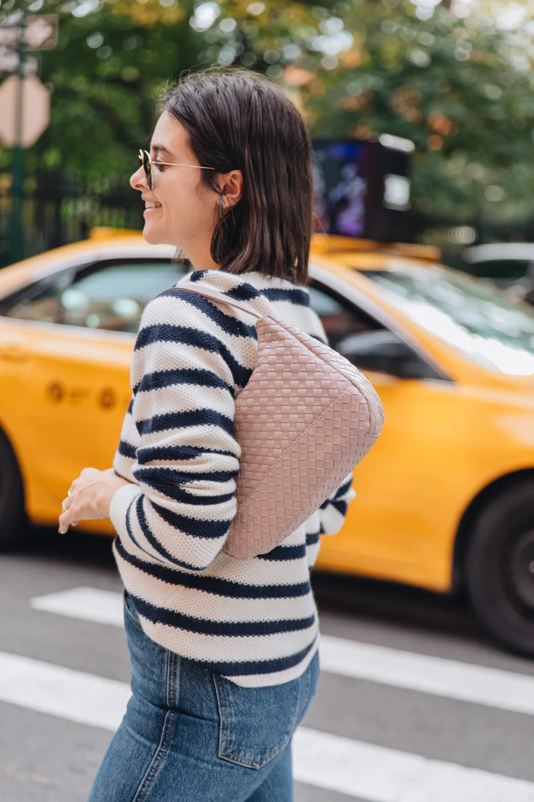We’ve seen them everywhere. We all know that woven accessories are SUPER on trend right now, and that’s why I loved getting this bag from Malibu Sky. It’s the perfect little bag that fits all of my essentials!
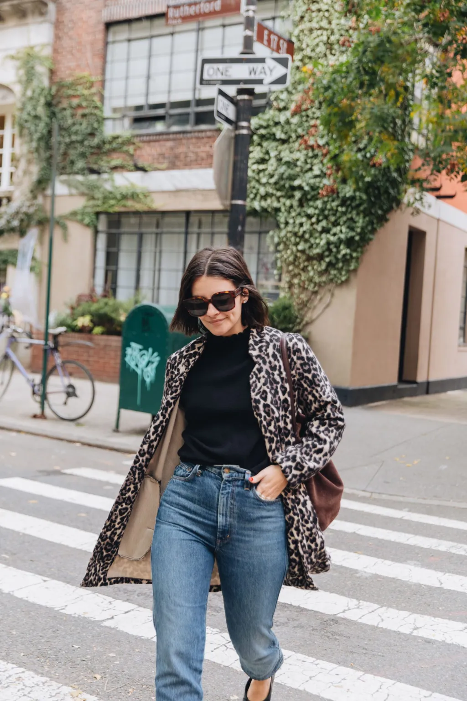When I pulled this coat out of the box, I think I shrieked. I’m still a firm believer that leopard is a neutral, and this coat is just such a fun piece. It’s also INSANELY soft and cozy. Plus, I love that with leopard anything you can wear both black, beige, and brown! The options are endless.
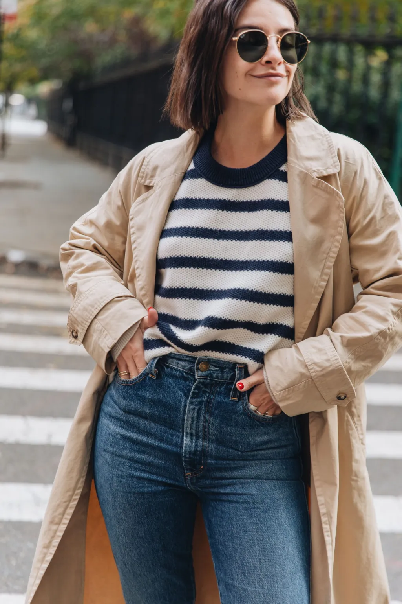And finally, there’s NOTHING better than a GOOD sweater. So when I saw this Club Monaco cashmere sweater and Les Serein sweater, I couldn’t be happier. I love easy sweaters that you can just throw on and go. Cashmere obviously is SO luxurious, and feels GREAT on the body. I was also really loving the Les Serein sweater with the adorable and on trend ruffle details. Adds a little bit of femme! I also LOVED it paired with my leopard jacket!
Overall, I was really happy with my experience with Stitch Fix. Not only did I end up LOVING all of the pieces I received, but I also thought it was really fun to take the quiz and see what goodies arrive on your doorstep. Sign up for Stitch Fix today and get 25% off if you decide to keep all 5 items in your Fix!